import numpy as np
import pandas as pd
import matplotlib.pyplot as plt
import seaborn as snsDataFrame and Plotting Basics
Pandas DataFrames
To make plotting easier, we’re going to use a pandas dataframe and kinda pretend they’re numpy arrays.
Unlink numpy ndarrays, pandas dataframes can contain multiple data types, as long as each column is a single dtype.
Also unlike numpy ndarrays, pandas dataframes have column names and an index that is used to reference each row.
First, let’s create some simple dataframes using two different methods.
arr = np.arange(20).reshape(5,4)
df = pd.DataFrame(arr,columns=['Var0','Var1','Var2','Var3'])
print('Dataframe from numpy array:')
print(df)
# using variables with different types
var0 = np.arange(5)
var1 = 1. * np.arange(3,8) # using 1. as a quick way to cast to float
var2 = ['One', 'Two', 'Three', 'Four', 'Five']
var3 = [True, False, False, True, True]
df = pd.DataFrame({'Var0':var0, 'Var1':var1, 'Var2':var2, 'Var3':var3})
print("\n\ndata frame from a set of variables:")
print(df)Dataframe from numpy array:
Var0 Var1 Var2 Var3
0 0 1 2 3
1 4 5 6 7
2 8 9 10 11
3 12 13 14 15
4 16 17 18 19
data frame from a set of variables:
Var0 Var1 Var2 Var3
0 0 3.0 One True
1 1 4.0 Two False
2 2 5.0 Three False
3 3 6.0 Four True
4 4 7.0 Five TrueNow let’s load a CSV file into a pandas dataframe and examine its conents.
# load csv from path
df = pd.read_csv('./../../datasets/movie_profits.csv')
print("movie profits preview:")
print(df.head())movie profits preview:
Year Movie US Gross ($M) Budget ($M) Run Time (min) \
0 2012 Django Unchained 162.805434 100.0 165
1 2012 Parental Guidance 77.264926 25.0 105
2 2012 The Impossible 19.019882 40.0 114
3 2012 Jack Reacher 80.070736 60.0 130
4 2012 This is 40 67.544505 35.0 134
Critic Score (Rotten Tomatoes)
0 88
1 18
2 81
3 61
4 51 On the left side is the index (by default it’s an array starting with zero) and on the top row are the column names.
Slicing DataFrames
Let’s slice this data… We can do this slicing in three different ways in pandas!
Slicing by Position (.iloc)
print("first 3 rows, all columns")
print(df.iloc[:3], '\n')
print("first 3 rows, first 2 columns")
print(df.iloc[:3, :2], '\n')
print("first 3 rows in REVERSE order, first 2 columns")
print(df.iloc[:3, :2][::-1], '\n')first 3 rows, all columns
Year Movie US Gross ($M) Budget ($M) Run Time (min) \
0 2012 Django Unchained 162.805434 100.0 165
1 2012 Parental Guidance 77.264926 25.0 105
2 2012 The Impossible 19.019882 40.0 114
Critic Score (Rotten Tomatoes)
0 88
1 18
2 81
first 3 rows, first 2 columns
Year Movie
0 2012 Django Unchained
1 2012 Parental Guidance
2 2012 The Impossible
first 3 rows in REVERSE order, first 2 columns
Year Movie
2 2012 The Impossible
1 2012 Parental Guidance
0 2012 Django Unchained
Slicing by Label (.loc)
# using column names to index
print("entire 'Year' column")
print(df['Year'], '\n')
print("first 3 rows of 'Year'")
print(df['Year'].loc[0:3])
# print(df['Year'][0:3]) # this is the same as above but DOES NOT include 3entire 'Year' column
0 2012
1 2012
2 2012
3 2012
4 2012
...
604 2008
605 2008
606 2008
607 2008
608 2008
Name: Year, Length: 609, dtype: int64
first 3 rows of 'Year'
0 2012
1 2012
2 2012
3 2012
Name: Year, dtype: int64Note that when using .loc you are referencing the index value itself, NOT the position. It is therefore inclusive of both the beginning and end values you use.
# iloc vs loc
# example df using a subset of the other df
exdf = df.iloc[:3, :2][::-1]
print(exdf, '\n')
print("using .iloc for indexing:")
print(exdf.iloc[0:2],'\n')
print("using .loc for indexing:")
print(exdf.loc[0:2],'\n')
# this is EMPTY because the indexes were reversed
# but we can go backwards
print("[2:0]...")
print(exdf.loc[2:0],'\n') Year Movie
2 2012 The Impossible
1 2012 Parental Guidance
0 2012 Django Unchained
using .iloc for indexing:
Year Movie
2 2012 The Impossible
1 2012 Parental Guidance
using .loc for indexing:
Empty DataFrame
Columns: [Year, Movie]
Index: []
[2:0]...
Year Movie
2 2012 The Impossible
1 2012 Parental Guidance
0 2012 Django Unchained
Slicing by Value
We can also use boolean masks to slice by value, just as we did with numpy arrays.
# boolean indexing
# movies with runtime greater than 90 minutes
mask = df['Run Time (min)'] > 90
longMovies = df[mask]
# usually masking and indexing is combined:
longMovies2 = df[df['Run Time (min)'] > 90]
print(longMovies2.head())
# this is a new dataframe so it has its own indexes Year Movie US Gross ($M) Budget ($M) Run Time (min) \
0 2012 Django Unchained 162.805434 100.0 165
1 2012 Parental Guidance 77.264926 25.0 105
2 2012 The Impossible 19.019882 40.0 114
3 2012 Jack Reacher 80.070736 60.0 130
4 2012 This is 40 67.544505 35.0 134
Critic Score (Rotten Tomatoes)
0 88
1 18
2 81
3 61
4 51 For more on indexing in pandas, you can also reference this guide.
Descriptive Statistics with DataFrames
Similar to numpy arrays, you can apply statistical functions like min(), max(), and mean() to the numeric columns of pandas dataframes.
# applying functions to dataframes
# similar to applying functions to numpy arrays
# min
print("Shortest runtime (minutes):")
print(df['Run Time (min)'].min(),'\n')
# mean
print("Average score:")
print(df['Critic Score (Rotten Tomatoes)'].mean(),'\n')
# max
print("Largest budget (millions):")
print(df['Budget ($M)'].max(),'\n')Shortest runtime (minutes):
63
Average score:
47.19211822660098
Largest budget (millions):
250.0
You can also use the describe() function to get a summary of your dataframe.
# describe dataframe
summary = df.describe()
print(summary) Year US Gross ($M) Budget ($M) Run Time (min) \
count 609.000000 609.000000 609.000000 609.000000
mean 2009.967159 75.819769 58.195731 106.885057
std 1.408003 82.643347 52.171647 16.726906
min 2008.000000 2.778752 1.000000 63.000000
25% 2009.000000 25.534493 22.000000 95.000000
50% 2010.000000 48.237389 40.000000 105.000000
75% 2011.000000 94.835059 79.000000 114.000000
max 2012.000000 760.507625 250.000000 196.000000
Critic Score (Rotten Tomatoes)
count 609.000000
mean 47.192118
std 25.781232
min 0.000000
25% 25.000000
50% 45.000000
75% 68.000000
max 99.000000 Note that calling describe() returns a new dataframe. The index on the left side is no longer numeric!
# summary is also a dataframe
print(summary.loc['mean'])Year 2009.967159
US Gross ($M) 75.819769
Budget ($M) 58.195731
Run Time (min) 106.885057
Critic Score (Rotten Tomatoes) 47.192118
Name: mean, dtype: float64Ok! Now that we’ve got a dataframe and we can slice into it and summarize it, let’s do some plotting!
Plotting Data
Matplotlib Plotting
The matplotlib library is the engine under the hood of the seaborn library. Mostly we will use seaborn, but we should first learn a little bit about the underlying system.
Here is a simple scatter plot:
# plotting from dataframe
x = df['Budget ($M)']
y = df['Run Time (min)']
# create and label plot
plt.scatter(x,y)
plt.xlabel('Budget ($M)')
plt.ylabel('Run Time (min)')
# output the plot IMAGE (not the object)
plt.show()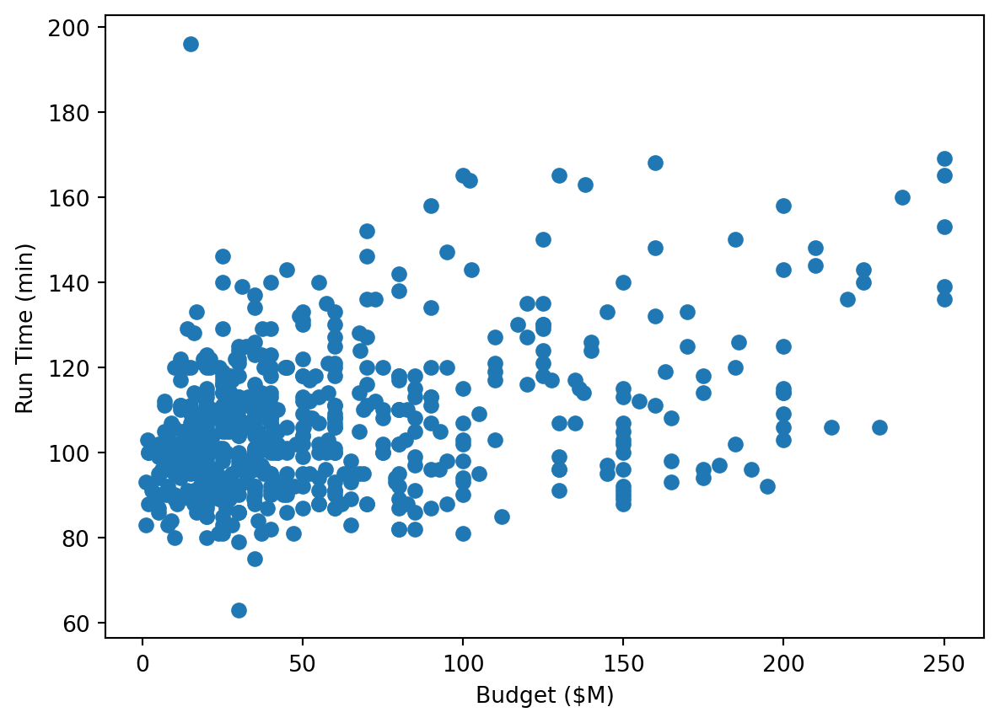
If we want to create two plots side by side, we would create a figure with subplots.
# compare two plots
z = df['Critic Score (Rotten Tomatoes)']
# create a figure
fig, axs = plt.subplots(2, 1) # rows, cols
# populate first axis
axs[0].scatter(x, y)
# different labeling functions from above because this is axis-specific
axs[0].set_xlabel('Budget ($M)')
axs[0].set_ylabel('Run Time (min)')
# second axis
axs[1].scatter(x, y)
axs[1].set_xlabel('Budget ($M)')
axs[1].set_ylabel('Critic Score')
plt.show()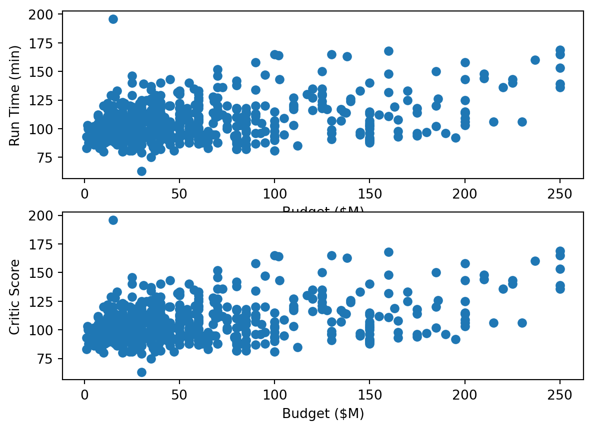
There is a lot more to matplotlib figures than we can cover here, but for a useful reference guide you can refer to the diagram below.

Seaborn Plotting
Now let’s create the same plots again but using seaborn. Because we are using dataframes, we just pass in the data and the column names for the variables we want and seaborn does the rest!
Here is a single plot.
# create single sb plot
g = sns.scatterplot(df, x='Budget ($M)', y='Run Time (min)')
plt.show()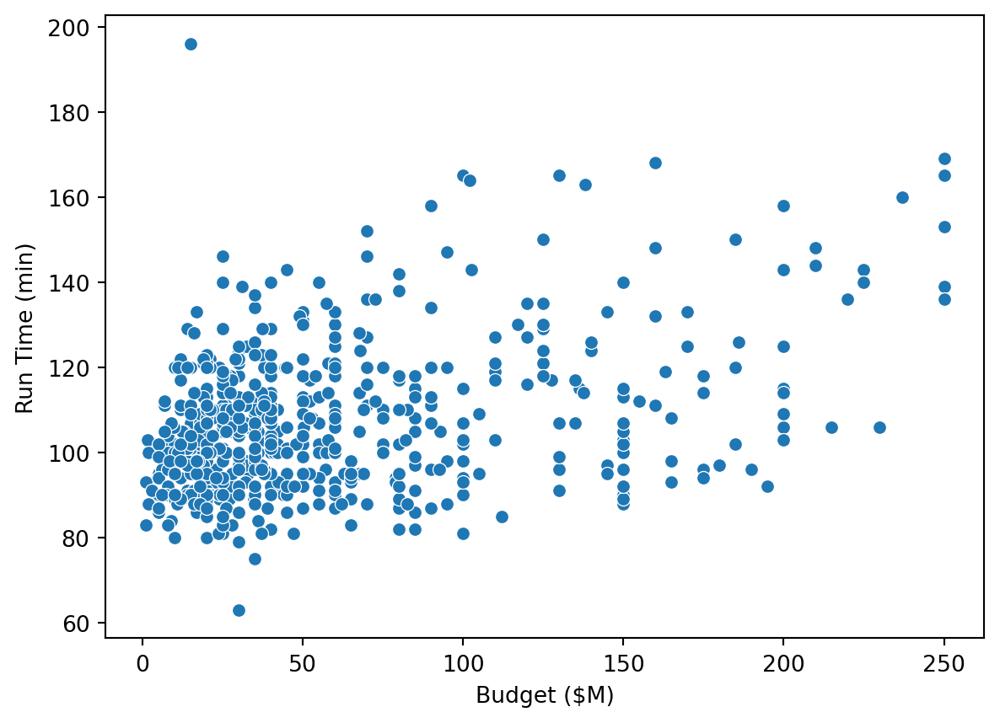
And here we have a double plot with a shared x-axis. Much less code, much nicer figures!
g = sns.PairGrid(df,
y_vars=['Run Time (min)', 'Critic Score (Rotten Tomatoes)'],
x_vars=['Budget ($M)'],
aspect = 3)
g.map(sns.scatterplot)
plt.show()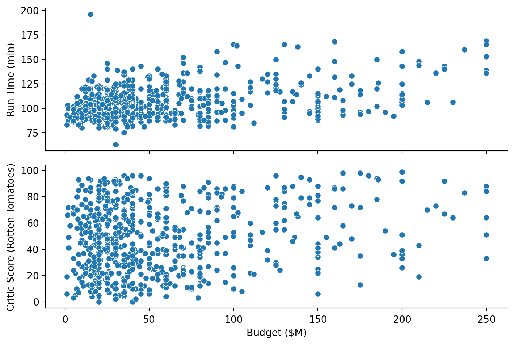
Notice we have an outlier in our run time. Let’s use indexing to find out the name of that movie!
# 2 ways
print(df[df['Run Time (min)'] > 175]) # guessing
print('\n')
print(df[df['Run Time (min)'] == df['Run Time (min)'].max()]) # get highest Year Movie US Gross ($M) Budget ($M) \
15 2012 The Man with the Iron Fists 15.63409 15.0
Run Time (min) Critic Score (Rotten Tomatoes)
15 196 49
Year Movie US Gross ($M) Budget ($M) \
15 2012 The Man with the Iron Fists 15.63409 15.0
Run Time (min) Critic Score (Rotten Tomatoes)
15 196 49 Example Plots
Let’s do a few example plots of different kinds.
# get a slice of data
exdata = df[['US Gross ($M)', 'Budget ($M)']]
# make histogram
g1 = sns.histplot(exdata)
plt.show()
# kernel density plot
# normal proportions
g2 = sns.kdeplot(exdata, fill=True)
plt.show()
# line plot
g3 = sns.lineplot(df, x='Year', y='Budget ($M)')
g3.set(xticks=range(df['Year'].min(), df['Year'].max()+1))
plt.show()
# paired line plot
g4 = sns.PairGrid(df,
y_vars=['Budget ($M)', 'US Gross ($M)'],
x_vars=['Year'],
aspect = 3)
g4.map(sns.lineplot)
# g4.set(xticks=range(df['Year'].min(), df[]))
plt.show()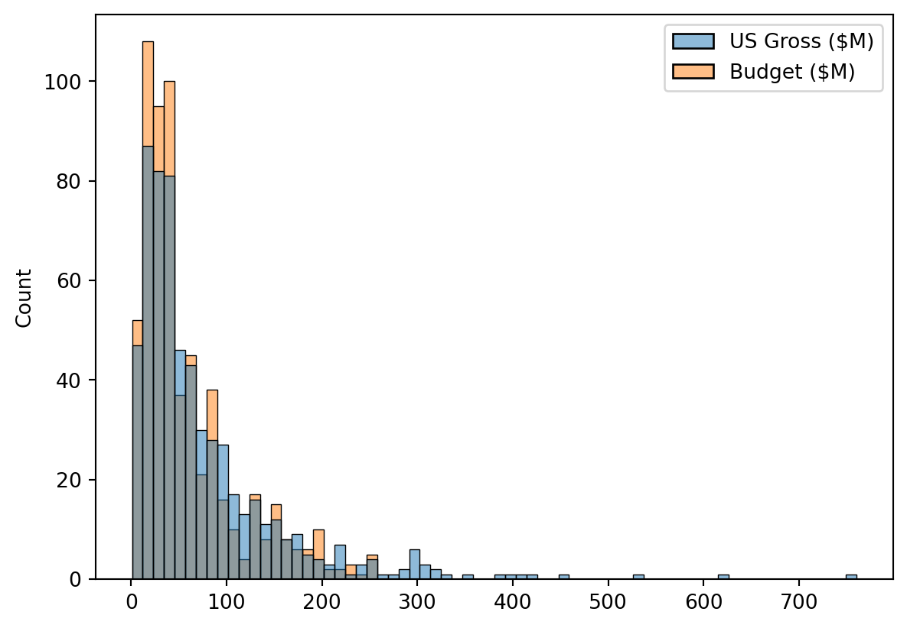
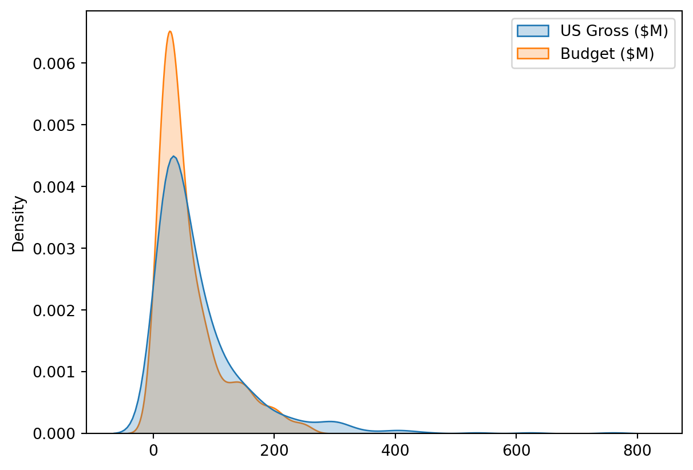
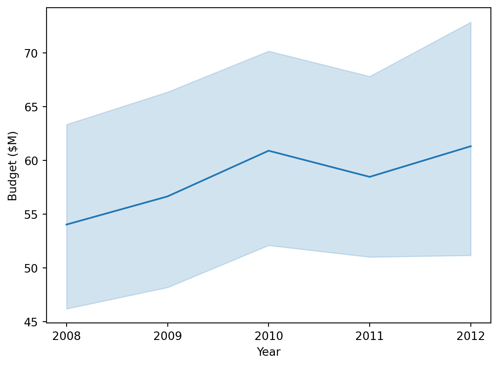
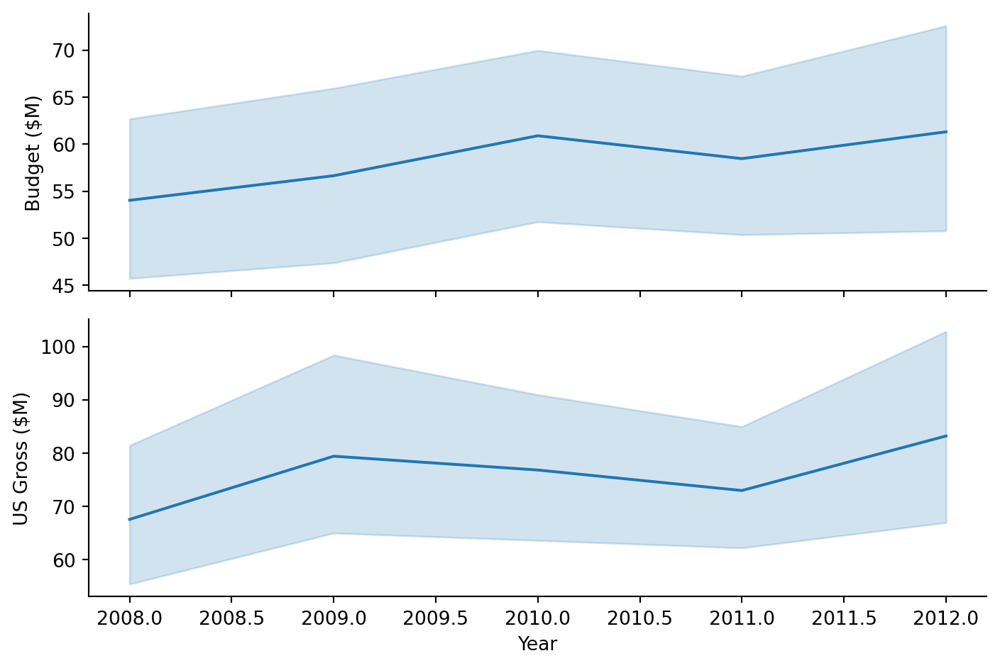
Another important type of plot is the pairplot, which shows relationships between all pairs of variables in a dataset. This is particularly useful during EDA!
# pairplot
g = sns.pairplot(df, diag_kind="kde")
plt.show()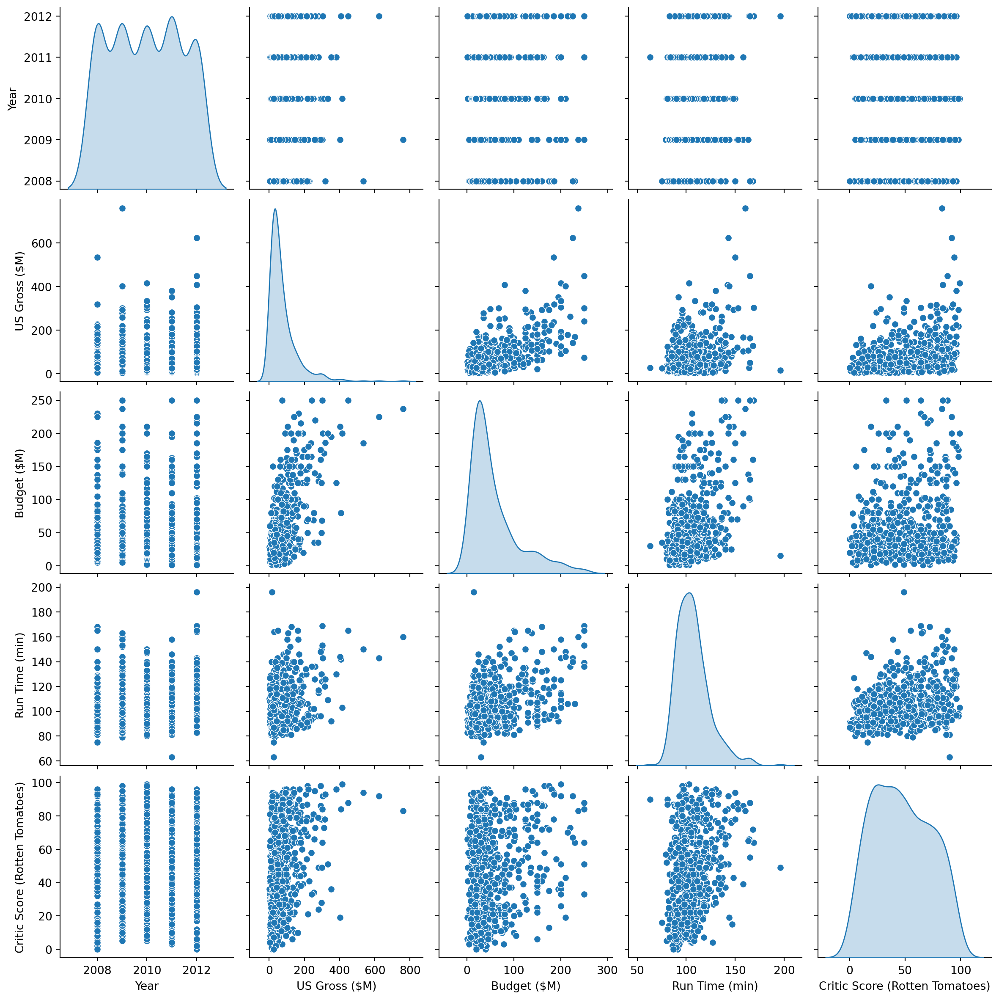
Practice Choosing Plot Types
For each of the following, (1) choose the appropriate type of plot from the list and (2) provide a short justification for your choice. Please format your answer with line breaks so it’s easier to read!
Plot Choices:
- Line graph
- shows trends of one variable dependant on another (usually time)
- Scatter plot
- always continuous/continous
- Density plot
- same as histogram but PROPORTION (each observation/total observations)
- Boxplot
- good for looking at outliers, medians, quartiles
- Bar graph
- x is categorical “bins”
- Histogram
- x is usually continous numeric, “bins”
- Violin plot
- like a box plot, but shows proportions
- Heatmap
- values depending on space
- How many birds of each species visited your bird feeder today
- bar graph
- use species as different categories so amount of birds is on the Y axis and species are on the X axis
- How many total birds were visiting the feeder every 15 minutes (collected over 2 hours)
- line graph
- counting the amount of birds (discrete) at regular intervals, trending by time
- The number of seeds each bird ate relative to its size in cm
- histogram
- size of birds (cm) is continuous (bins), number of seeds eaten is discrete.
- A summary of the size distribution of all the birds
- histogram or boxplot
- boxplot if the size data has outliers, histogram otherwise.
- The weight of each bird in grams relative to its size in cm
- scatter plot
- both weight and size are continuous
- The likelihood of a bird taking a certain number of seeds
- box plot
- likelihood can be looked at by median, outliers, skew, etc
- The number of birds who took a certain number of seeds during your observation
- violin
- proportion of birds who took certain amount of seeds
- The geographic distributions of various bird species
- heatmap
- values (species) over space (geographic distribution)
- The distribution of bird sizes in cm for each species
- bar graph
- species (categories) relative to sizes (continous)
In Class Coding Exercise
We will use the classic penguins dataset in today’s exercise (available as part of data packages in both R and Python, and on kaggle). You can find information about each of the variables below.
- rowid: the observation index value
- species: Species of penguin (Adelie, Chinstrap, or Gentoo)
- island: Location where the penguin was observed (Torgersen, Biscoe, or Dream)
- bill length: Length of the penguin’s bill in mm
- bill depth: Depth of the penguin’s bill in mm
- flipper length: Length of the penguin’s flipper in mm
- body mass: Total mass of the penguin in grams
- sex: Sex of the penguin (Male or Female)
- year: Year that the observation was recorded
Instructions
Use
describe()andsns.pairplot()to examine overall trends in the data.Choose any set of appropriate variables to generate each of the following plots. You can refer to the seaborn gallery for examples.
- Scatter plot with a single pair of variables
- Bar plot with two variables
- Facet grid showing multiple levels of a categorical variable on one axis
(Here is a link to a facet grid tutorial)
Answers
Your code and answers go here!
# import penguins data
df = pd.read_csv('./../../datasets/penguins_complete.csv')
# print(df)
summary = df.describe()
print(summary)
g1 = sns.pairplot(df, diag_kind="kde")
plt.show()
# Scatter plot with a single pair of variables
# flipper length and body mass
g2 = sns.scatterplot(df, x='body_mass_g', y='flipper_length_mm')
plt.show()
# bar plot with two variables
# species and flipper length
g3 = sns.barplot(df, x='species', y='flipper_length_mm')
plt.show()
# Facet grid showing multiple levels of a categorical variable on one axis
# species and body mass, bill length, bill depth
# g4 = rowid bill_length_mm bill_depth_mm flipper_length_mm \
count 342.000000 342.000000 342.000000 342.000000
mean 172.701754 43.921930 17.151170 200.915205
std 99.174948 5.459584 1.974793 14.061714
min 1.000000 32.100000 13.100000 172.000000
25% 87.250000 39.225000 15.600000 190.000000
50% 172.500000 44.450000 17.300000 197.000000
75% 257.750000 48.500000 18.700000 213.000000
max 344.000000 59.600000 21.500000 231.000000
body_mass_g year
count 342.000000 342.000000
mean 4201.754386 2008.029240
std 801.954536 0.817168
min 2700.000000 2007.000000
25% 3550.000000 2007.000000
50% 4050.000000 2008.000000
75% 4750.000000 2009.000000
max 6300.000000 2009.000000 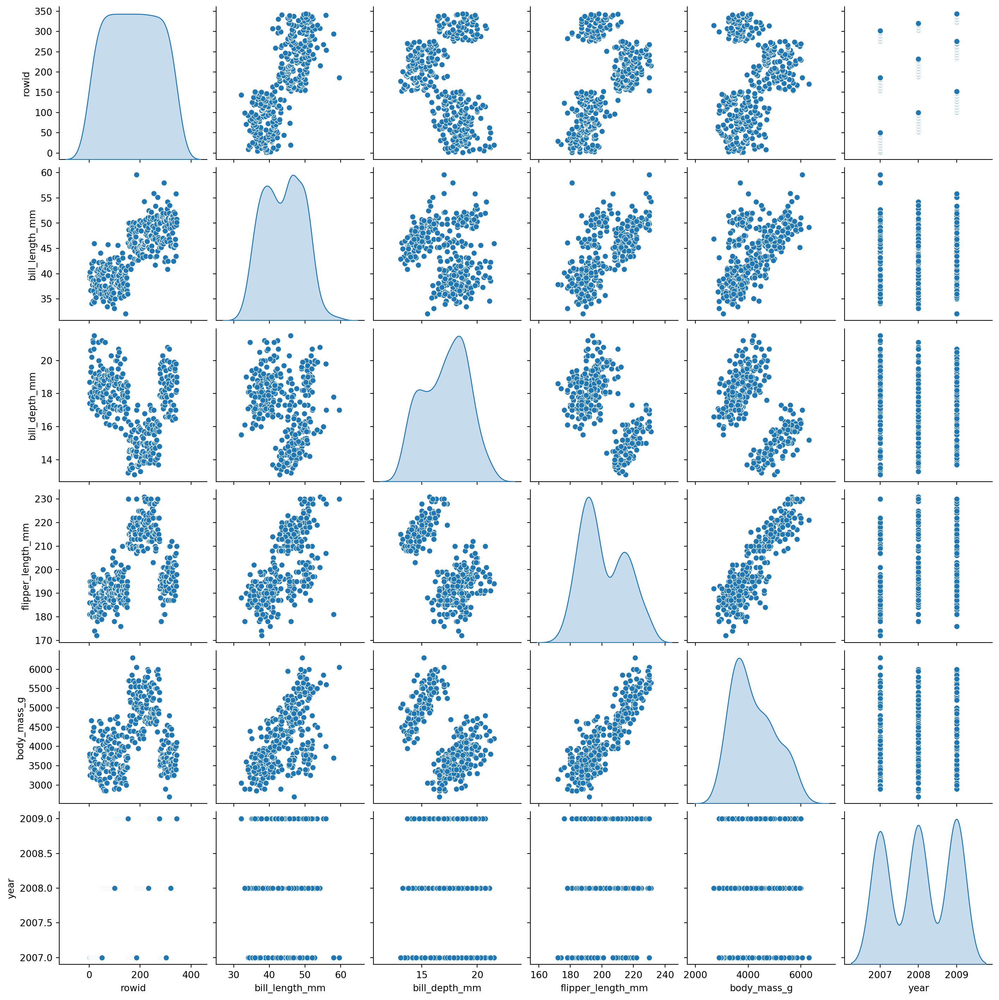
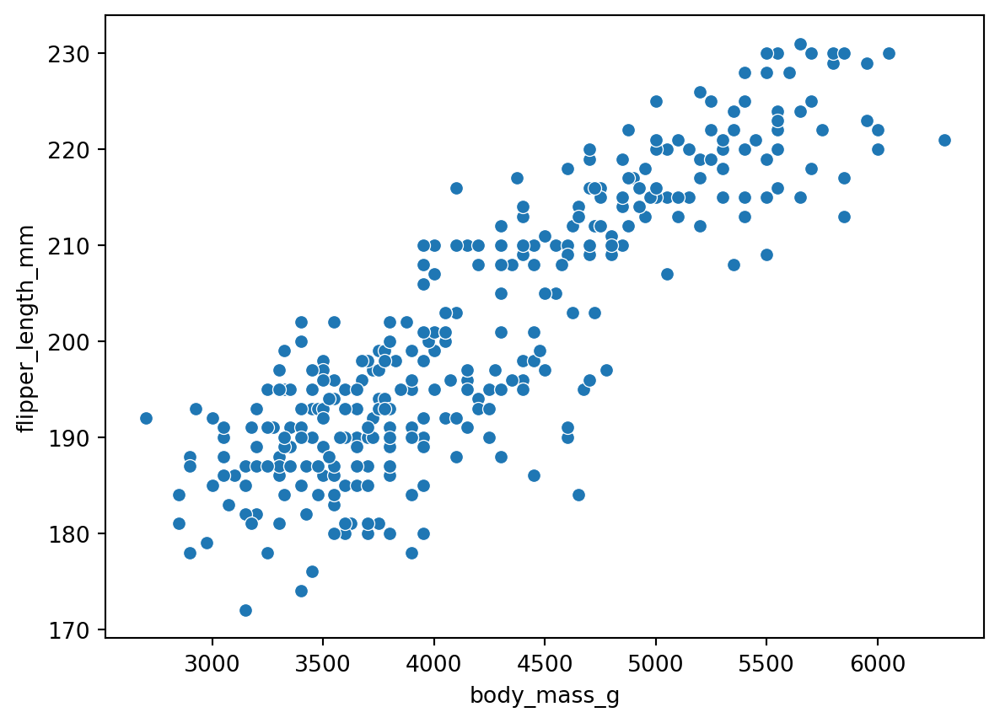
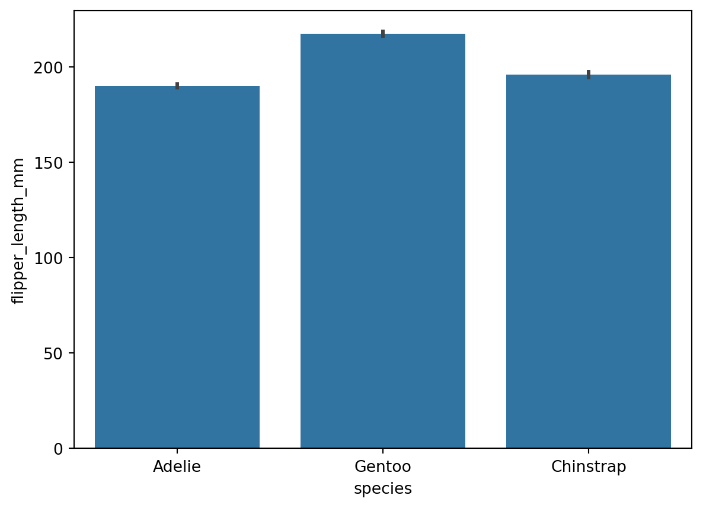